管理図のチュートリアル
Tutorial-Control-Charts
始める前の注意
- ここからサンプルプロジェクトファイルをダウンロードし、Originで開きます。
 | 詳細情報:
|
変数管理図 - サブグループ: Xbar-R管理図
背景
あるメーカーが、直径21mmの高品質なナット を生産しています。
品質管理部門では、2台の機械から 20日間にわたり毎日4つのナット を抜き取り、直径を測定しました。
ナットの平均直径が21±0.05 (20.95～21.05) になるか確認し、2台の機械の動作を管理したい場合を考えます。
Originでの操作
- フォルダ1.Normalを開き、ワークブックDiameterをアクティブにします。
- Originのウィンドウ左側にあるアプリギャラリーウィンドウを開き、Statistical Process Controlアイコン
 をクリックします。
をクリックします。
- 管理図タブを選択し、ドロップダウンリストからサブグループ管理図を選び、Xbar-Rを選択します。
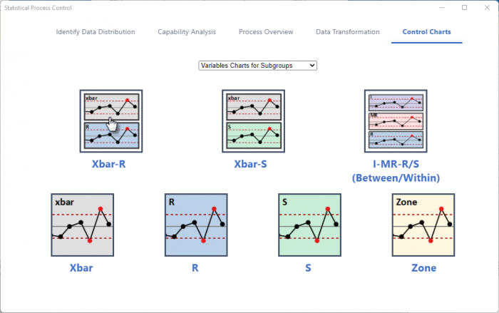
- 開いたダイアログの入力タブで、列BとCを測定データとして選択します。サブグループのサイズを列にし、サブグループのサイズ列を列Aに設定します。
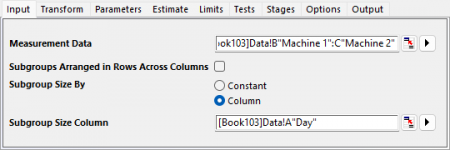
- パラメータタブで、履歴平均を21に設定します。
-
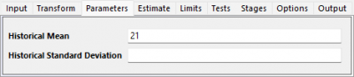
- 制限タブXbar管理図の管理限界の境界ブランチを開きます。上側管理限界 の20.95、下側管理限界に21.05を設定します。
-
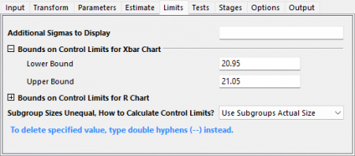
- 検定タブを開いて以下を選択します。
- 1点>中心線からのK標準偏差
- 連続するK点が中心線の片側にある
- 連続するK点が中心線から1標準偏差内にある (両側)
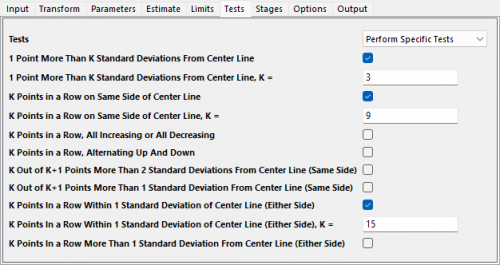
- OKボタンをクリックします。レポート表付きのグラフが作成されます。
結果の解釈
プロセスばらつきが管理されていない場合、Xbar管理図は不正確になる可能性があるので、最初にR管理図を確認します。2台の機械のR管理図ではすべての点が管理限界内にあり、プロセスばらつきが管理されていることがわかります。
機械は1つの異常点を持っています。Machine 1のXbar管理図では、管理限界を超えている点があることがわかります。TEST 1の検定結果から、ポイント18が不合格であることが確認できます。
機械2は管理状態にあります。Machine 2のXbar管理図では、すべてのポイントが管理限界内にあります。
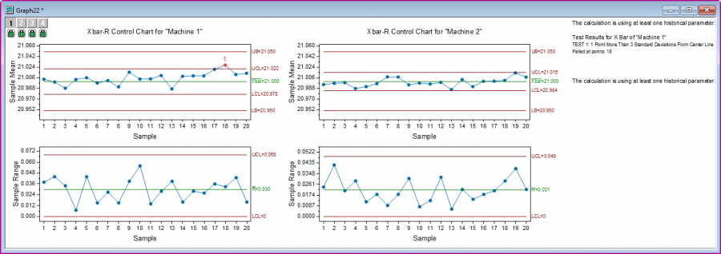
変数管理図 - 個別: I-MR管理図
背景
品質管理エンジニアが、パイプの生産プロセスを評価します。150サンプルのパイプの高さ（フィート）データを収集しました。彼はこの工程が管理状態にあるかどうかを確認したいと考えています。
Originでの操作
- フォルダ1.Normalを開きます。ワークブックHeight of Pipeをアクティブにします。
- ワークシートのA列を選択します。Originのウィンドウ左側にあるアプリギャラリーウィンドウを開き、Statistical Process Controlアイコンをクリックします。
- 管理図タブを選択し、ドロップダウンリストから個別管理図を選び、 I-MRを選択します。
- 開いたダイアログの入力タブで、列Aが測定データとして自動的に選択されます。
- 検定タブを開いて以下を選択します。
- 1点>中心線からのK標準偏差
- 連続するK点が中心線の片側にある
-
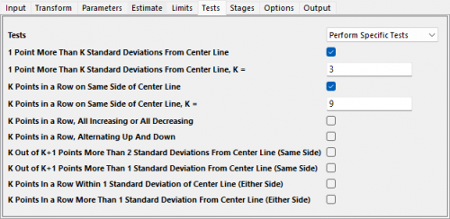
結果の解釈
まずMRチャートを確認します。82番目、133番目の点がTest 1に失敗、105番目の点がTest 2に失敗と記載されています。プロセスの変動が大きく安定していない可能性があります。
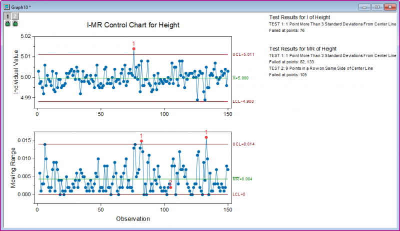
計数管理図: P管理図診断とP管理図
背景
あるショップのマネージャーが、25日間にわたり顧客満足度調査 を実施し、不満のある顧客数を記録しました。
彼は サービスが仕様を満たしているか を確認したいと考えています。
Originでの操作
- フォルダ4.Binomialを開き、ワークブックSurveyをアクティブにします。
- Originのウィンドウ左側にあるアプリギャラリーウィンドウを開き、Statistical Process Controlアイコンをクリックします。
- 管理図タブで、ドロップダウンリストから係数管理図を選択し、P管理図診断を選択します。
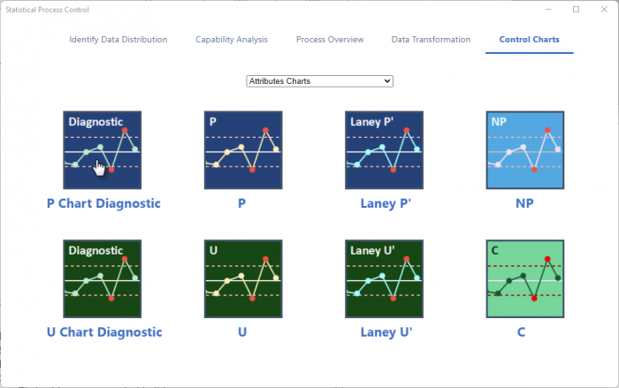
- 開いたダイアログの入力タブで不良を列Bに設定します。サンプルサイズ列にし、サンプルサイズ列にA列を設定します。
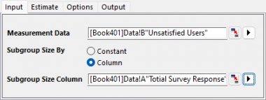
- OKボタンをクリックします。グラフが作成されます
-
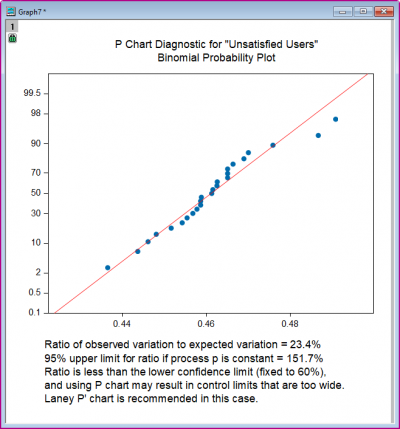
- P管理図診断のメモに記載されているようにLaney P'管理図を使用する必要があります。Originのウィンドウ左側にあるアプリギャラリーウィンドウを開き、Statistical Process Controlアイコンをクリックします。
- 管理図タブでLaney P'を選択します。
- 開いたダイアログの入力タブで不良を列Bに設定します。サンプルサイズ列にし、サンプルサイズ列にA列を設定します。
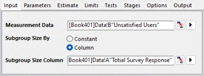
- 入力タブの検定ドロップダウンリストからすべての検定を実行するを選択します。
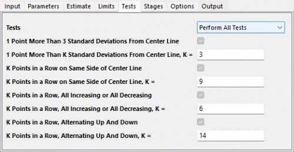
結果の解釈
すべてのデータポイントが管理限界内にあります。ノートには失敗したポイントについて記載がなく、すべてのテストに合格したことを意味する。プロセスは管理状態にあることが確認できます。
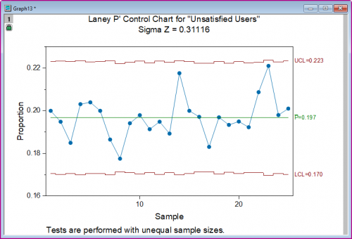
時間重み付き管理図: CUSUM（累積和）管理図
背景
ある製造業者は直径21ミリメートルの高品質のねじナットを製造しています。
品質管理部門では、2台の機械から 20日間にわたり毎日4つのナット を抜き取り、直径を測定しました。
ナットの平均直径が21±0.05 (20.95～21.05) になるか確認し、2台の機械の動作を管理したい場合を考えます。
品質管理部門は、X-Bar管理図のX-Barを作成済みです。しかし、これらの機械の摩耗も監視したいと考えています。
Originでの操作
- フォルダ1.Normalを開き、ワークブックDiameterをアクティブにします。
- Originのウィンドウ左側にあるアプリギャラリーウィンドウを開き、Statistical Process Controlアイコンをクリックします。
- 管理図タブを選択し、ドロップダウンリストから時間重み付き管理図を選び、 CUSUMを選択します。
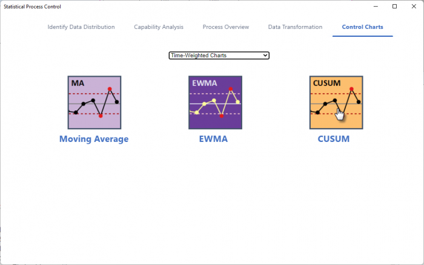
- 開いたダイアログの入力タブで、列BとCを測定データとして選択します。サブグループのサイズを列にし、サブグループのサイズ列を列Aに設定します。目標は21にします。
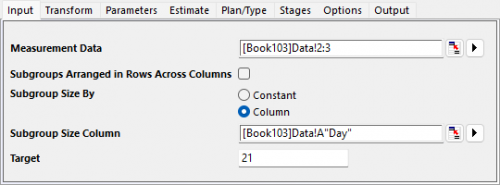
- OKボタンをクリックします。グラフが作成されます。
結果の解釈
machine 2の場合、すべての点がCUSUMチャートで管理限界内にあります。
machine 1の場合、17番目の点から小さなズレが示されています。メーカーはmachine 2が摩耗による影響が時間とともに現れるか確認すべきであることがわかります。
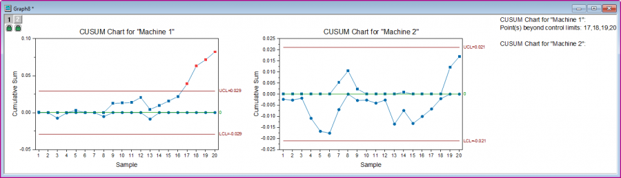